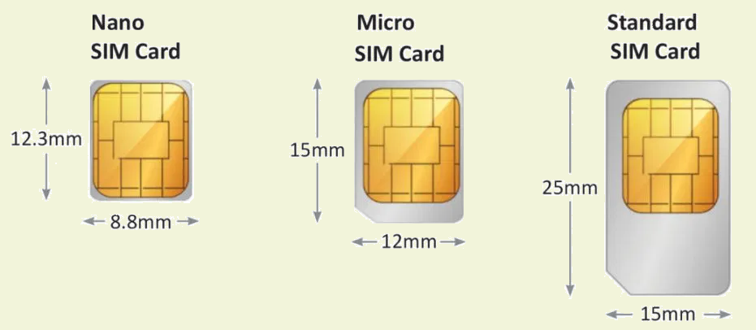

There are phones with MULTIPLE SIM cards
There are phones with Single SIM, Dual SIM,Triple SIM or Quad SIM.For example LG A395(2013) and LG C299(2013) have Quad SIM (Mini-SIM).
SIM card sizes: Standard, Micro and Nano explained
All phones need SIM cards, but they don’t all need SIM cards of the same size. In fact, there are three different sizes in use, namely Standard, Micro and Nano.
What is a Standard SIM card?
A Standard SIM card is, despite the name, not the most common or ‘standard’ SIM card you’ll find. But it was when it launched – hence the name. The name also reflects the fact that this is the largest type of SIM card available at 15 x 25mm. You could think of it as a full size card while the other two are cut down. However the chip is the same size in all three. This is the important bit that stores your data, so with a Standard SIM card you just have a lot of plastic around it. The Standard SIM card is the oldest of them (introduced way back in 1996) and so while it was once used in many handsets, including big-name ones like the iPhone 3GS, it’s rarely used in phones now – some feature phones and very basic mobile phones still use these, as do some old handsets, but smartphones made in the last six or seven years almost certainly won’t.
What is a Standard SIM card?
A Micro SIM card is one size down from a Standard card. So it’s a little smaller, coming in at 12 x 15mm. As noted above the actual chip is the same size, so it’s just the bit around it that’s smaller. Having been introduced back in 2003, this card also isn’t widely in use anymore, with most handsets having moved on to newer Nano SIM cards, discussed below. If your phone is a few years old, but too new for a Standard SIM card, then it might use a Micro SIM, but handsets made in the last five years generally don’t. As an example, the Samsung Galaxy S5 launched in 2014 uses a Micro SIM, but the following year’s Galaxy S6 uses a Nano one.
What is a Nano SIM card?
Nano SIM cards are the smallest of the bunch, coming in at 8.8 x 12.3mm, they’re also the newest, having made their debut in 2012. This has almost no border around the chip so it’s hard to imagine SIM cards getting much smaller in future, unless the chip itself is shrunk. Nano SIM cards are by far the most widely used, so if you’re buying a new phone it’s almost certainly one of these that you’ll need.